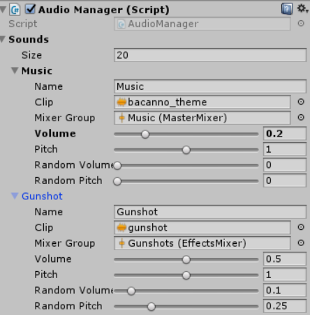

Two professional bank robbers caught in a tight spot, up to you to get them out! Local coop, fast paced, heist brawler set in the 1920's!
Fight through waves of cops, blow up vaults and get enough money in time to repay debt!
Trailer
Development
The Textbook Robbery was created in Unity 5.6 engine. The team, Out of Scope, responsible for the game consisted of a team of 5 people.
Team Members
Joris Verhelst: Camera, UI, Sound, General programming Yentoff Cuypers: Tool dev, Systems dev Anton Guljajev: Animations, Combat, Shaders and Lighting Pablo Sanchez: Static meshes, Main characters Patrick Jahr: Static meshes, Cars, Enemy characters
Camera
Designing and implementing the camera was one of my main tasks as well as being one of my first times being confronted with such a mathematically focussed problem. I ended up deciding on something similar to what the more recent games have implemented: the camera will stay centered between the two players until they are a certain distance from each other. However, if they are further apart, the camera will split based on the players relative location to each other.
The biggest challenge during all of this was making sure the players appeared in the same place on the screen during the transitions from one camera to two and vice-versa.
Sound
For the sound I first had to work out a system that would work for when the game is played in splitscreen because unity does not suppost multiple audio listeners very well. I ended up with a simple system that manages all sounds very easily, this also allowed me to slim down on the amount of audiosources in all of our levels. The one limitation that I had to work with, is that all sounds effects could not be three dimensional, this was fine for most things but I still ended up implementing a system that 'fakes' 3D sounds in a very basic manner.
